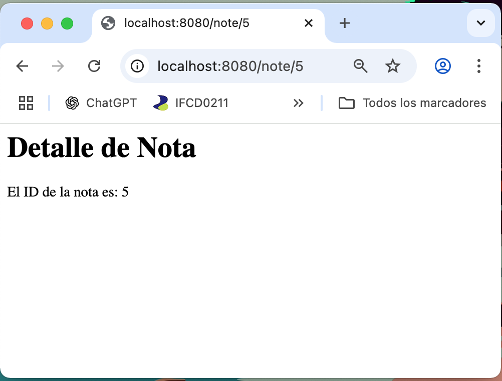
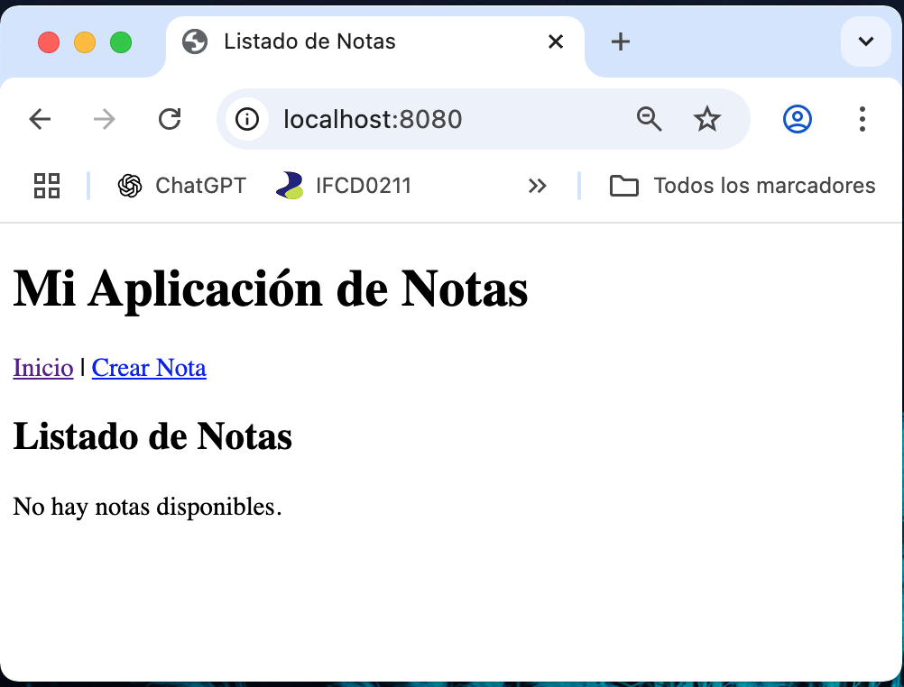
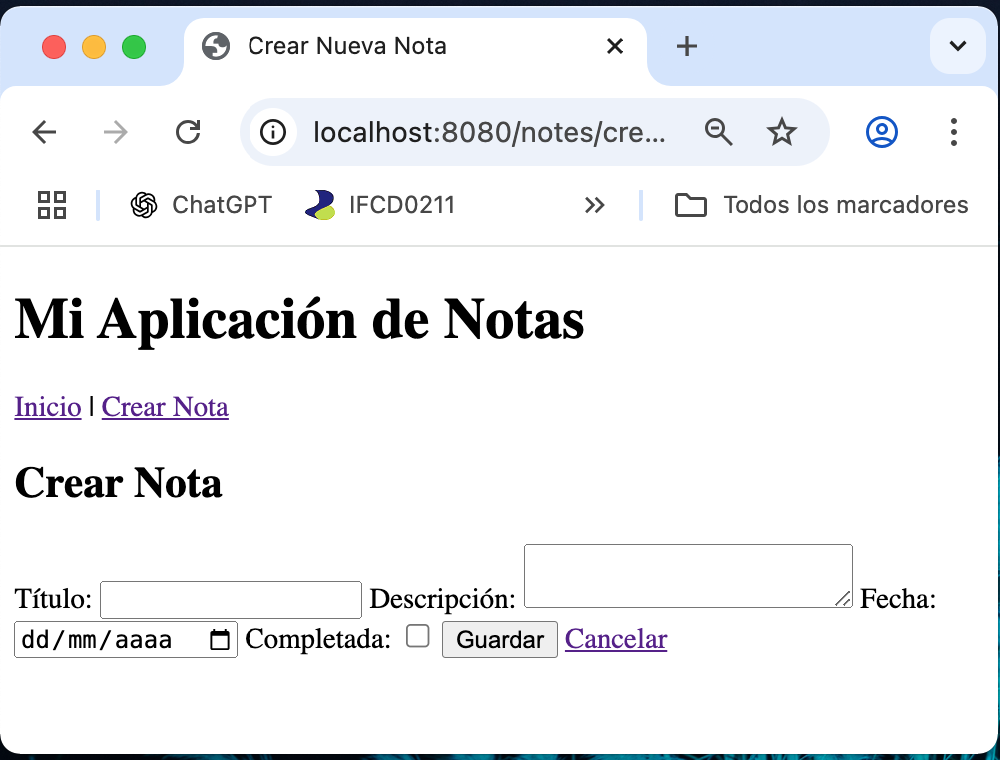
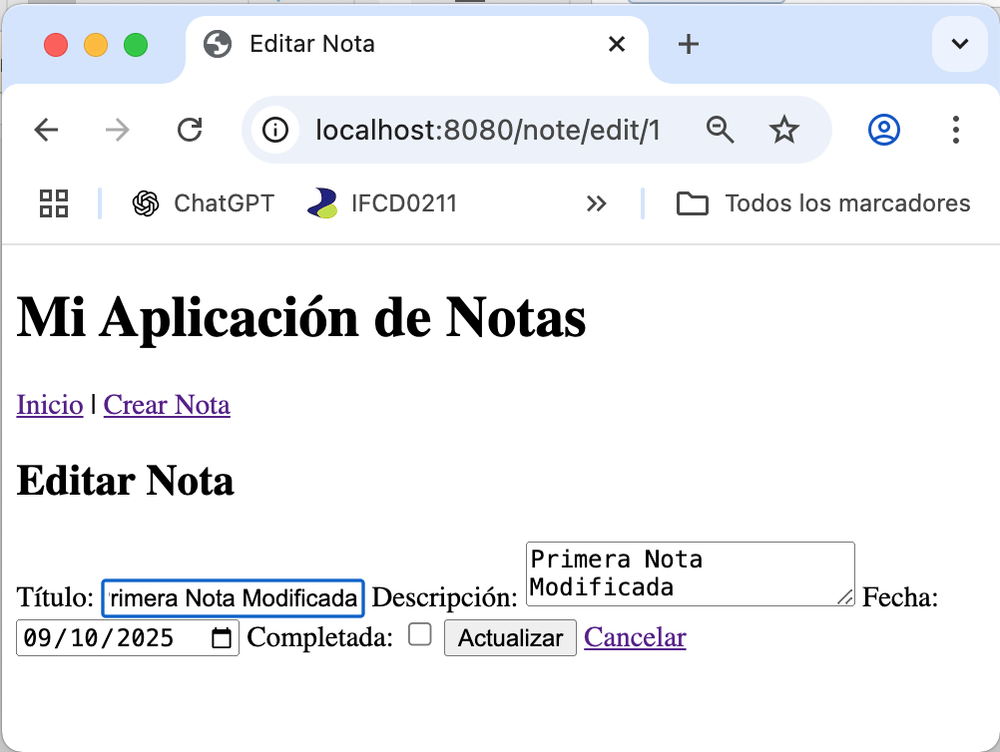
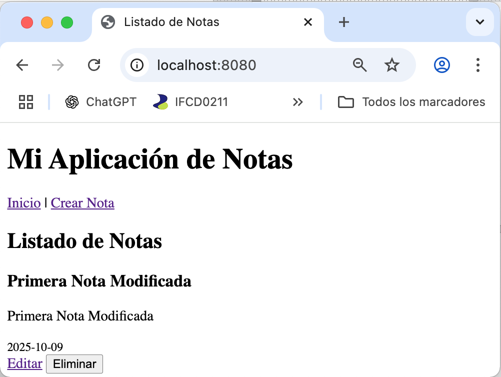
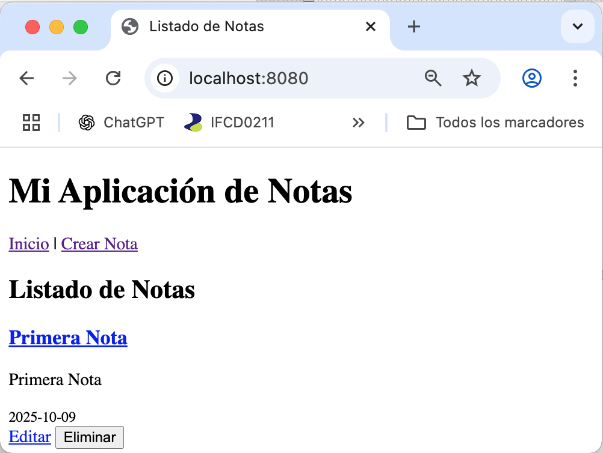
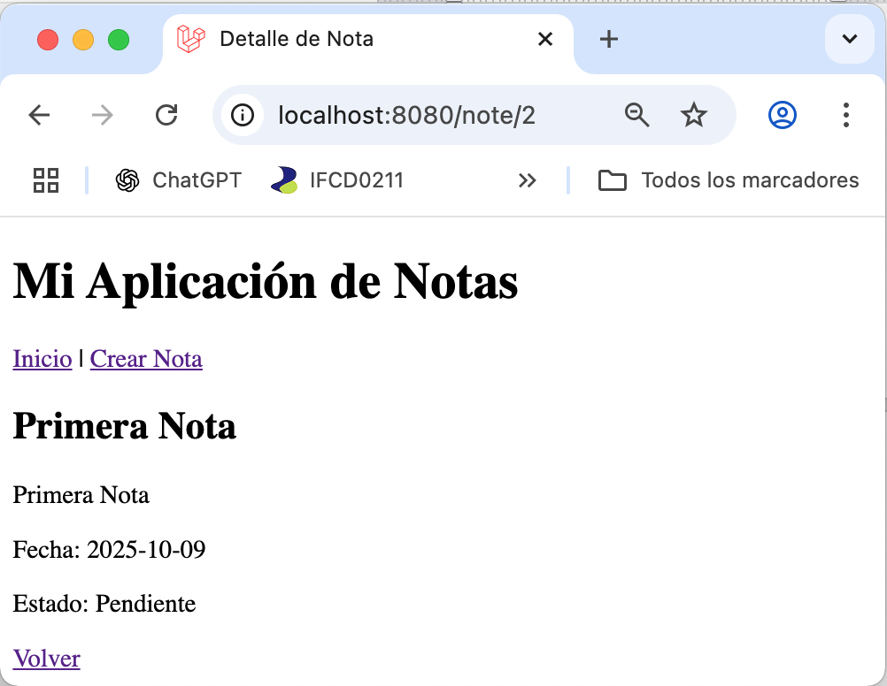
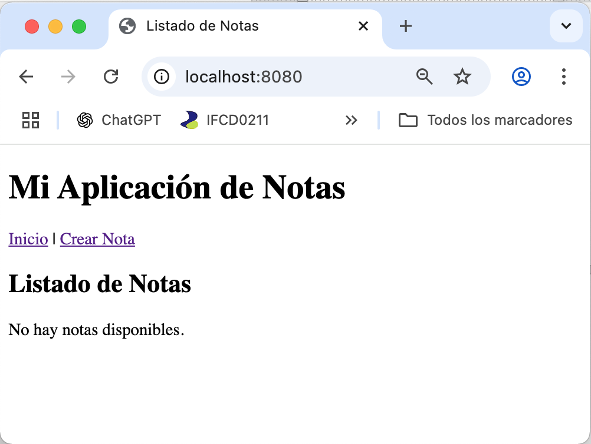

Desarrollo de un CRUD¶
Autoría de este tema
El contenido de este tema (las lecciones, la actividad y los anexos) es obra de Javier Beteta, del curso Introducción a Laravel. Adaptado para 2º DAW del IES Juan de Garay por Eva María Gómez Abad.
Introducción a CRUD¶
El término CRUD corresponde a las operaciones básicas que se realizan en la mayoría de las aplicaciones que gestionan datos:
- Create (Crear): Insertar nuevos datos.
- Read (Leer): Consultar y visualizar datos.
- Update (Actualizar): Modificar datos existentes.
- Delete (Eliminar): Borrar datos.
En Laravel, la implementación de un CRUD completo nos permite comprender cómo los Modelos, Controladores y Vistas interactúan entre sí para ofrecer una experiencia de usuario completa.
Desarrollo de CRUDs
Dominar el desarrollo de CRUDs es básico para cualquier programador web, ya que casi todas las aplicaciones web tienen que manejar datos de algún tipo, y estas son las acciones fundamentales que se realizan sobre esos datos.
Además, este tema nos va a servir para aprender el funcionamiento de los formularios en Laravel.
Rutas Dinámicas y Controladores¶
Parámetros dinámicos en rutas¶
En Laravel, podemos definir rutas que aceptan parámetros dinámicos. Estos parámetros permiten que una misma ruta atienda solicitudes distintas según el valor proporcionado. Podemos permitirnos el símil de que el nombre de la ruta es el nombre de la función y los parámetros son los argumentos que recibe esa función. Por tanto nos va a permitir generar una respuesta dinámica en función de los parámetros que reciba.
Ejemplo sencillo:
<?php
Route::get('/nota/{id}', function ($id) {
return "Mostrando la nota con ID: $id";
});
En este caso, id es un parámetro dinámico. Si accedemos a http://localhost:8080/nota/5, Laravel mostrará: "Mostrando la nota con ID: 5".
Múltiples parámetros:
<?php
Route::get('/usuario/{id}/nota/{nota_id}', function ($id, $nota_id) {
return "Usuario $id - Nota $nota_id";
});
Importante
El orden de los parámetros en la URL debe coincidir exactamente con el orden de los parámetros en la función anónima o el controlador.
Crear un circuito MVC rápido para rutas dinámicas¶
Modelo: Vamos a utilizar una tabla notes con los campos:
id(entero, autoincremental)title(string)description(text)date(date)done(boolean)
Vamos a crear la migración de la nota y el controador:
Podemos crearla migración y la nota con un solo comando:
Ahora vamos al archivo de migración database/migrations/xxxx_xx_xx_create_notes_table.php y añadimos los campos:
Migración
<?php
use Illuminate\Database\Migrations\Migration;
use Illuminate\Database\Schema\Blueprint;
use Illuminate\Support\Facades\Schema;
class CreateNotesTable extends Migration
{
/**
* Run the migrations.
*
* @return void
*/
public function up()
{
Schema::create('notes', function (Blueprint $table) {
$table->id();
$table->string('title');
$table->text('description');
$table->date('date');
$table->boolean('done')->default(false);
$table->timestamps();
});
}
public function down()
{
Schema::dropIfExists('notes');
}
Por último, ejecutamos la migración:
Si tenemos algún problema porque no hemos creado la base de datos desde 0, podemos eliminar las migraciones anteiores con:
Modelo Note:
Ahora vamos a implementar el modelo Note. Vamos a definir los campos que se pueden asignar en masa y los que no:
Modelo
$fillable: Define qué campos se pueden asignar en masa.$guarded: Define qué campos no se pueden asignar.
Controlador NoteController:
Ahora codificamos el controlador app/Http/Controllers/NoteController.php:
método show, para mostrar un ID
Ruta asociada:
Ahora que ya tenemos el controlador y el método que manejará la ruta, y el modelo que se conectará con la base de datos, vamos a definir la ruta en routes/web.php:
Ruta con Parámetro Dinámico y Controlador
Vista resources/views/notes/show.blade.php:
Por último nos queda crear la vista que mostrará la información de la nota con el ID recibido:
Con esto, accediendo a /note/5 veremos "El ID de la nota es: 5".
imagen /note/5

función compact()
La función compact('variable') crea un array asociativo ['variable' => $variable] que puede ser pasado a la vista. Es una forma rápida y limpia de pasar datos. Sólo la puedo utilizar si el valor de la clave es el mismo que el nombre de la variable.
Parámetros opcionales y valores por defecto¶
Podemos definir parámetros opcionales añadiendo un signo de interrogación ?:
<?php
Route::get('/saludo/{nombre?}', function ($nombre = 'Invitado') {
return "Hola, $nombre";
});
- Si accedemos a
/saludo/Laura, veremos "Hola, Laura". - Si accedemos a
/saludo, veremos "Hola, Invitado".
Reglas para Parámetros Opcionales
- El parámetro opcional debe ser el último de la URL.
- Hay que asignar un valor por defecto en la función.
Importancia del orden de las rutas¶
Laravel evalúa las rutas en el orden en que se definen.
Ejemplo de conflicto:
<?php
Route::get('/nota/nueva', function() { return 'Crear nueva nota'; });
Route::get('/nota/{id}', function($id) { return "Nota ID: $id"; });
- Primero debe definirse
/nota/nuevaporque si no, Laravel intentará interpretarnuevacomo unid. - El orden correcto es siempre de rutas más específicas a más generales.
Consejo
Primero define todas las rutas fijas y luego las rutas con parámetros dinámicos.
Desarrollo del CRUD para notas¶
Listar todas las notas¶
Primero creamos la ruta y el método para listar todas las notas.
Ruta:
Ruta para Listar Notas
Controlador:
método index, para listar todas las notas
Explicación de @forelse vs @foreach:
@foreachse utiliza para recorrer elementos, pero no gestiona si el array está vacío.@forelsepermite recorrer elementos y además definir qué hacer si no hay elementos.
Ejemplo:
@forelse ($notes as $note)
<p>{{ $note->title }}</p>
@empty
<p>No hay notas disponibles.</p>
@endforelse
En el ejemplo anterior, si $notes está vacío, se mostrará "No hay notas disponibles."
Crear layout base en resources/views/layouts/app.blade.php:
Layout
<!DOCTYPE html>
<html lang="es">
<head>
<meta charset="UTF-8">
<title>@yield('title')</title>
</head>
<body>
<header>
<h1>Mi Aplicación de Notas</h1>
<nav>
<a href="{{ route('note.index') }}">Inicio</a> |
<a href="{{ route('note.create') }}">Crear Nota</a>
</nav>
</header>
<main>
@yield('content')
</main>
</body>
</html>
Vista de Listado resources/views/notes/index.blade.php:
En este formulario vamos a adelantar algunas cosas que ampliaremos más adelante. Para poner el enlace a eliminar una nota, vamos a utilizar un formulario con el método POST y la directiva @method('DELETE'). Esta directiva simula el método HTTP DELETE en formularios HTML (que solo permiten GET y POST). Más adelante explicaremos esto con más detalle. Hasta aquí nada especialmente llamativo. Pero también veréis que está la directiva @csrf. Esta directiva genera un campo oculto con un token que protege el formulario contra ataques CSRF (Cross-Site Request Forgery). Más adelante también explicaremos esto con más detalle. En laravel esta protección es automática, pero hay que incluir la directiva @csrf en los formularios para que funcione correctamente.
Listado de Notas
@extends('layouts.app')
@section('title', 'Listado de Notas')
@section('content')
<h2>Listado de Notas</h2>
@forelse ($notes as $note)
<div>
<h3><a href="{{ route('note.show', $note->id) }}">{{ $note->title }}</a></h3>
<p>{{ $note->description }}</p>
<small>{{ $note->date }}</small>
<div>
<a href="{{ route('note.edit', $note->id) }}">Editar</a>
<form action="{{ route('note.destroy', $note->id) }}" method="POST" style="display:inline">
@csrf
@method('DELETE')
<button type="submit">Eliminar</button>
</form>
</div>
</div>
@empty
<p>No hay notas disponibles.</p>
@endforelse
@endsection
Crear una Nueva Nota¶
Para poder crear una nota necesitamos tres cosas:
- Una ruta que muestre el formulario de creación,
/note/create. - Un método en el controlador que maneje esa ruta y muestre la vista con el formulario:
function create(). - Una vista que contenga el formulario de creación:
resources/views/notes/create.blade.php.
Ruta para formulario de creación:
Ruta para Crear Nota
Controlador:
método create, para mostrar el formulario de creación
Vista resources/views/notes/create.blade.php:
Formulario de Crear Nota
@extends('layouts.app')
@section('title', 'Crear Nueva Nota')
@section('content')
<h2>Crear Nota</h2>
<form action="{{ route('note.store') }}" method="POST">
@csrf
<label>Título:</label>
<input type="text" name="title" required>
<label>Descripción:</label>
<textarea name="description" required></textarea>
<label>Fecha:</label>
<input type="date" name="date" required>
<label>Completada:</label>
<input type="checkbox" name="done">
<button type="submit">Guardar</button>
<a href="{{ route('note.index') }}">Cancelar</a>
</form>
@endsection
Guardar la Nueva Nota¶
Al igual que en el caso anterior, para guardar la nota necesitamos dos cosas. Una ruta que maneje el envío del formulario y un método en el controlador que procese los datos y guarde la nota en la base de datos. Al final, redirigiremos a la lista de notas.
Ruta para guardar:
Ruta para Guardar Nota
Controlador:
Para guardar la nota, podemos usar diferentes métodos. Aquí mostramos dos formas:
Guardar Nota
<?php
public function store(Request $request)
{
$note = new Note();
$note->title = $request->input('title');
$note->description = $request->input('description');
$note->date = $request->input('date');
$note->done = $request->input('done') ? 1 : 0;
$note->save();
// Redirigir a la lista de notas
return redirect()->route('note.index');
}
O usando el método create:
Guardar Nota
Nota sobre campos checkbox
En el caso de los campos checkbox, si no se marca, no se envía ningún valor, es decir, en el request no existirá la clave done y por tanto este campo no se actualizará.
Para solucionarlo, podemos usar una expresión ternaria:
para asignar un valor por defecto de 0 cuando no se marque el checkbox. O simplememnte comprobar si el campo existe en el request y asignar 1 si existe o 0 si no existe
Por tanto tenemos que modificar el método store para que el campo done se actualice correctamente:
Guardar Nota
Explicaciones Adicionales:
@csrfprotege contra ataques CSRF (Cross-Site Request Forgery).$request->all()devuelve todos los datos enviados en el formulario.- Laravel valida automáticamente que el token CSRF esté presente. Si no lo está, lanzará un error.
¿Cómo funciona CSRF?
- Laravel genera un token único para cada sesión de usuario.
- Este token se incluye en cada formulario generado por Laravel.
- Cuando se envía el formulario, Laravel verifica que el token enviado coincida con el de la sesión.
- Si no coinciden, Laravel lanza un error 419 (Page Expired).
- Esto previene que un atacante envíe formularios en nombre del usuario sin su consentimiento.
Editar una Nota¶
Ruta para formulario de edición:
Ruta para Editar Nota
Controlador:
Tenemos varias formas de recibir el parámetro note. En esta primer recibimos el ID y buscamos la nota, para poder pasarla a la vista:
método edit, para mostrar el formulario de edición
En esta segunda forma, recibimos el modelo Note. De esta manera es Laravel el que se encarga de buscar la nota. Cuando trabajamos con modelos, esta es la forma recomendada:
método edit, con inyección de modelo
Vista resources/views/notes/edit.blade.php:
En este caso la ruta la hemos definido con el método PUT. Este método es el que se utiliza para actualizar los datos de un recurso existente. Pero ¿cómo hacerlo si las opciones de form solo permiten GET y POST?. Laravel nos ofrece una solución sencilla: la directiva @method('PUT'). Esta directiva simula el método PUT en formularios HTML. Esta directiva debe estar dentro del formulario y antes de los inputs.
<form id="sample-form" action="somepage.php" method="POST">
@csrf
@method('PUT')
<!-- Otros campos del formulario -->
</form>
Con este formato el formulario se enviará como un PUT, aunque el método del formulario sea POST.
Formulario de Editar Nota
@extends('layouts.app')
@section('title', 'Editar Nota')
@section('content')
<h2>Editar Nota</h2>
<form action="{{ route('note.update', $note->id) }}" method="POST">
@csrf
@method('PUT')
<label>Título:</label>
<input type="text" name="title" value="{{ $note->title }}" required>
<label>Descripción:</label>
<textarea name="description" required>{{ $note->description }}</textarea>
<label>Fecha:</label>
<input type="date" name="date" value="{{ $note->date }}" required>
<label>Completada:</label>
<input type="checkbox" name="done" {{ $note->done ? 'checked' : '' }}>
<button type="submit">Actualizar</button>
<a href="{{ route('note.index') }}">Cancelar</a>
</form>
@endsection
@method('PUT')simula el método HTTP PUT en formularios HTML (que solo permiten GET y POST).
Actualizar la Nota¶
Ruta para actualizar:
Ruta para Actualizar Nota
Controlador:
En este caso también tenemos dos formas de recibir el parámetro Note $note. En esta primer caso recibimos la nota y laravel por inyección de modelo la busca por nosotros y en el segundo caso recibimos el ID y buscamos la nota nosotros.
método update, con inyección de modelo
método update, buscando por ID
Problema con los checkbox en update
En este caso tenemos el mismo problema que en el método store con el campo done. Si no se marca el checkbox, no se envía ningún valor y por tanto este campo no se actualizará. Para solucionarlo, podemos usar una expresión ternaria para asignar un valor por defecto de 0 cuando no se marque el checkbox. O simplememnte comprobar si el campo existe en el request y asignar 1 si existe o 0 si no existe.
método update, con solución para checkbox
Mostrar una Nota Individual¶
Ruta para mostrar:
Ruta para Mostrar Nota
Controlador:
En este caso también tenemos dos formas de recibir el parámetro Note $note. En esta primer caso recibimos la nota y laravel por inyección de modelo la busca por nosotros y en el segundo caso recibimos el ID y buscamos la nota nosotros.
método show, buscando por ID
método show, para mostrar una nota individual
Vista resources/views/notes/show.blade.php actualizada:
Mostrar Nota
Eliminar una Nota¶
Ruta para eliminar:
Ruta para Eliminar Nota
Controlador:
Como en los casos anteriores, tenemos dos formas de recibir el parámetro Note $note. En esta primer caso recibimos la nota y laravel por inyección de modelo la busca por nosotros y en el segundo caso recibimos el ID y buscamos la nota nosotros.
método destroy, buscando por ID
método destroy, para eliminar una nota
<?php
public function destroy(Note $note)
{
$note->delete();
return redirect()->route('note.index');
}
- El método
delete()elimina el registro de la base de datos.
Prueba completa del CRUD¶
Ahora vamos probar todas las funcionalidades del CRUD:
Aspecto del ejemplo
Al no utilizar nada de CSS, el aspecto es muy básico. En un proyecto real, se debería aplicar estilos CSS para mejorar la apariencia y usabilidad.
-
Listar Notas: Accede a la ruta
/para ver el listado de notas.imagen /

-
Crear Nota: Haz clic en "Crear Nota", rellena el formulario y envíalo.
Al hacer click en "Crear Nota" se accede a
/note/create:imagen /note/create

Una vez rellenado el formulario lo enviamos al servidor (ruta
/note/store) y volvemos al listado de notas.imagen /

Podemos ver la nota creada y como aparecen los enlaces para editar y eliminar.
-
Editar Nota: Haz clic en "Editar" junto a una nota, modifica los datos y envía el formulario.
Al hacer click en "Editar" se accede a
/note/edit/{id}:imagen /note/edit/1

Una vez modificado el formulario lo enviamos al servidor (ruta
/note/update/{id}) que actualiza la nota y nos redirecciona al listado de notas.imagen /

-
Mostrar Nota: Haz clic en el título de una nota para ver sus detalles.
Al hacer click en el título de una nota se accede a
/note/show/{id}:imagen /

imagen /note/show/1

Una vez vista pulsamos volver y nos redirecciona al listado de notas.
-
Eliminar Nota: Haz clic en "Eliminar" junto a una nota. Al hacer click en "Eliminar" se envía un formulario con método
DELETEa la ruta/note/destroy/{id}que elimina la nota y nos redirecciona al listado de notas.Confirmación de Eliminación
En un proyecto real, es recomendable añadir una confirmación antes de eliminar una nota para evitar eliminaciones accidentales.
imagen /

Tipado en los métodos del controlador¶
Ejemplo de tipado correcto:
<?php
public function update(
Request $request,
Note $note
): RedirectResponse
{
$note->update($request->all());
return redirect()->route('note.index');
}
- Tipar los parámetros mejora la legibilidad y control de errores.
- Tipar el tipo de retorno ayuda a Laravel a validar internamente las respuestas.
Tipos comunes de retorno
Viewpara devolver vistas.use Illuminate\View\ViewRedirectResponsepara redirecciones.use Illuminate\Http\RedirectResponseJsonResponsepara APIs.use Illuminate\Http\JsonResponse